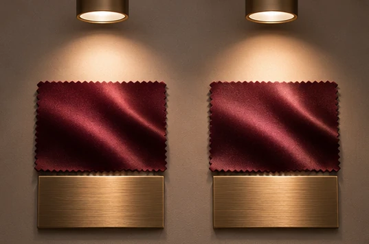
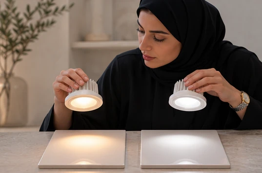
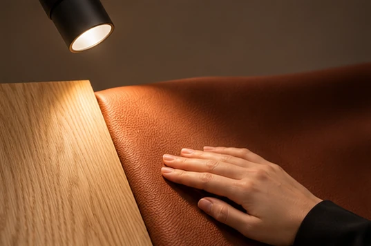
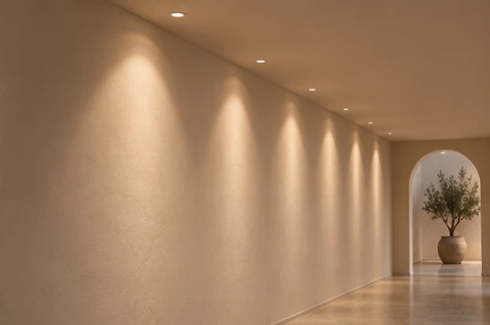
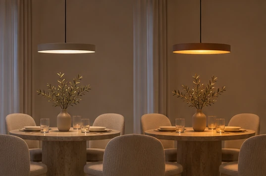
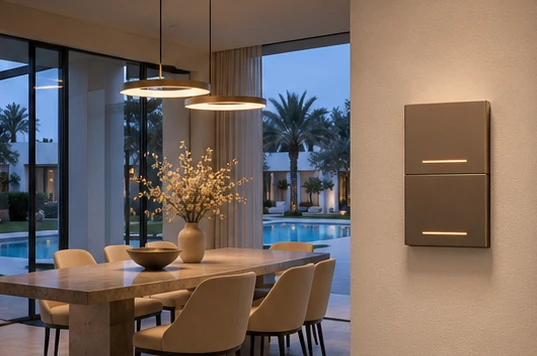
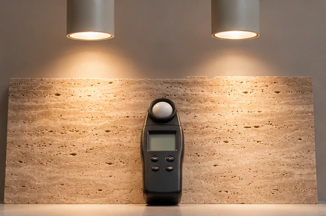
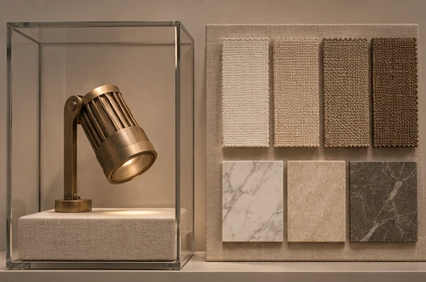

Let the finishes decide
In a Dubai boutique, two nominally 3000 K spotlights can make the same burgundy fabric look different because their spectral output differs.

Use correlated colour temperature to shortlist the appearance of white light, then ask for colour-rendering data at the exact output and CCT offered.

For skin tones, timber and saturated reds, examine the supplier’s R9 and TM-30 information alongside the general CRI figure and verify the effect on real samples.

Specify colour across adjacent fittings
On a long Abu Dhabi hotel corridor, request chromaticity consistency in SDCM steps for the selected LED package and inspect adjacent wall scallops for visible tint shifts.

A fixed-white engine keeps one nominal CCT through dimming, while a dim-to-warm engine follows a product-specific curve that can bring amber tones into a dining scene.

Tunable-white gear gives the operator a separate colour adjustment, so record both output and CCT for each scene the owner will recall.

Set an acceptance sample
Compare candidate fittings at matched illuminance on the same stone slab so extra brightness does not win the colour decision.

Retain the approved sample, driver setting and finish board for the contractor to compare with subsequent batches and future replacements.
